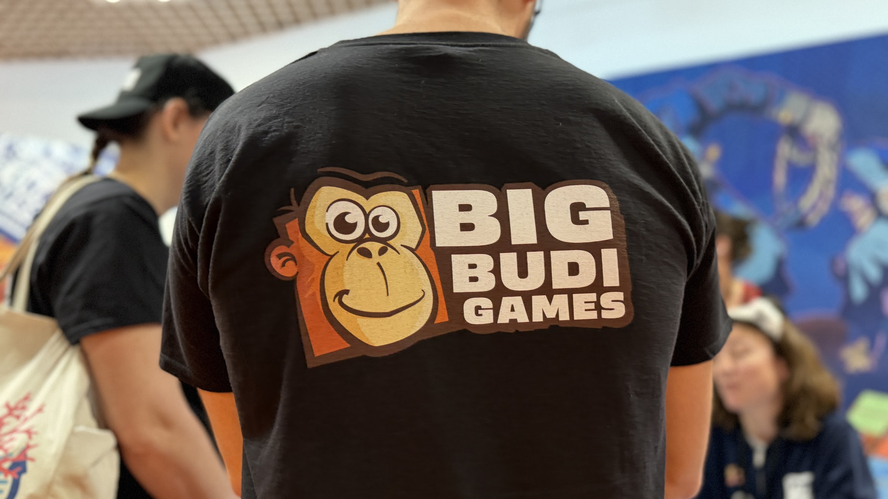

FIJ Cannes 2026
Mardi 25 février — Arrivée
On pose les valises à Cannes en fin de soirée, la tête déjà bien dans les rendez-vous du lendemain.
Mercredi 26 — La journée pros
Journée chargée : retrouvailles avec des connaissances de l'AAAH Montpellier, des auteurs croisés à la CAL à Lyon, puis 7 rendez-vous avec des auteur.ices, des imprimeurs et des agents. Le soir, soirée d'ouverture pro du FIJ puis premier passage dans le OFF — la plongée dans les protos qui ne sont pas encore sortis. Mention spéciale à la rencontre avec le duo de The Gaming Cottage, un vrai plaisir d'échange.
Jeudi 27 — Fabrication, logo et As d'Or
La journée commence par une conférence de Fabryka Kart sur la fabrication de jeux en Pologne — très instructif pour comprendre les options de production à notre niveau. On enchaîne avec un rendez-vous avec Amélie Maréchal (AMMA), la créatrice du logo Big Budi Games. À midi, deux rendez-vous avec des distributeurs pour parler de l'avenir d'EDIT, notre premier jeu. L'après-midi, 4 autres rendez-vous avec des auteur.ices, et on termine la journée en suivant avec curiosité la cérémonie de l'As d'Or.
Vendredi 28 — Le salon, les fabricants, 35 protos au compteur
Le rythme se pose un peu. On prend enfin le temps de tester des jeux édités dans le salon grand public. Dans la journée : 2 fabricants (l'un polonais, l'autre chinois), 4 rendez-vous avec des auteur.ices, et 1 distributeur. À la fin de la journée, on arrive à 35 protos présentés sur 3 jours.
Samedi — Grand public et au revoir (provisoire)
Plus de jeux, plus de tables, plus de monde. On joue, on revoit des gens avec qui les conversations de la veille n'étaient pas terminées, on rencontre encore des auteur.ices et illustrateur.ices. Le festival prend une autre allure le week-end.
Dimanche 1er mars — Dernier rendez-vous, retour à Montpellier
Un dernier rendez-vous, très intéressant, avec un auteur édité. Puis on reprend la route pour Montpellier, des étoiles plein les yeux et des perspectives concrètes pour les mois à venir.